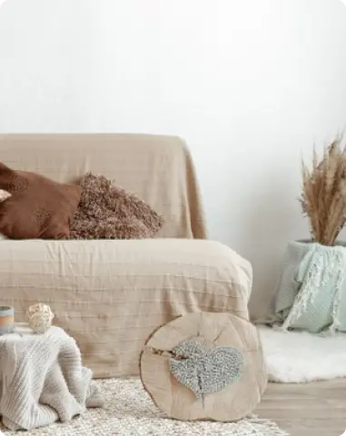
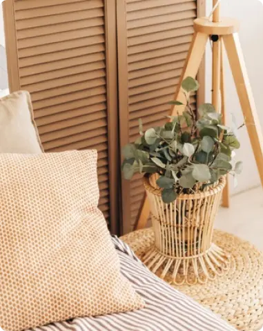

Векторна WEB графіка
Інтеграція за допомогою фону
- Векторна іконка, SVG
- Векторна іконка, SVG
- Векторна іконка, SVG
- Векторна іконка, SVG
Інтеграція за допомогою тегу img - векторні контентні зображення іконки SVG


Растова WEB графіка
Конвертація зображення PNG в AVIF
Конвертація зображення PNG у WebP


Конвертація зображення JPEG у AVIF

Адаптивні зображення у форматі AVIF (1х-4х), конвертовані з JPEG
Використання тегу picture для вибору оптимального формату зображення

Використання тегу srcset для вибору оптимального формату зображення (не підтримується Safari)